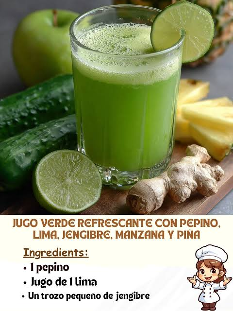

Jugo Verde Energía
Espinaca, piña y chía para potenciar tu rendimiento diario.
Observa nuestras propuestas de jugos totalmente frutales y 100% saludables que puedes preparar hoy mismo en tu hogar.
Está demostrado que el consumo regular de frutas y verduras reduce riesgos en la salud, pero es importante tomar en cuenta estas pautas:
Estas bebidas complementan tu nutrición diaria, pero no reemplazan tratamientos médicos ni diagnósticos profesionales.
Al prepararse con ingredientes 100% naturales, poseen menos preservantes y azúcares añadidos que las opciones industriales.
Si buscas un estilo de vida más activo o reducir el consumo de azúcar, estas bebidas serán excelentes aliadas en tu rutina diaria.
"Jugos saludables para una vida activa y llena de energía"
Espinaca, piña y chía para potenciar tu rendimiento diario.
Papaya arequipeña, naranja y frutos locales frescos.

NaturalPepino, limón y kion para rehidratar y purificar tu organismo.
Aprende las proporciones ideales para crear tus propias fórmulas.
Descubre todo lo bueno que aporta integrar estos jugos a tu día a día.
Aprovecha los nutrientes directos de la fruta y verdura sin químicos ni conservantes artificiales.
Múltiples combinaciones para experimentar nuevos sabores todos los días de la semana.
Una alternativa rápida y fácil de preparar en casa antes de salir a estudiar o trabajar.
Adapta cada preparación según tus requerimientos nutricionales y preferencias.
Forma parte de esta iniciativa enviando tus combinaciones favoritas :)